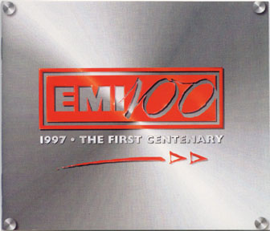
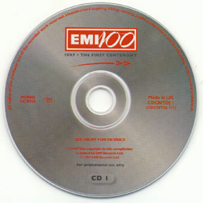

 |
Released in 1997, this promotional 2 CD UK compilation set contains original recordings spanning EMI's 100 year recording history.
This unit includes 2 CD's serialized as CDCNTDJ 1/1 & CDCNTDJ 1/2 packaged in a quad-folding case that closes up and secured by velcro. Also includes a special CD sized, 25 page booklet of photos and the entire history of EMI.
EMI is one of the world's largest record companies, with an enorous catalogue of records catering for all tastes, from medieval music to the latest pop. Its origins go back through The Gramophone Company Ltd and The Columbia Graphophone Company Ltd (both of which were formed in 1897 and which merged in 1931 to form Electric and Musical Industries Ltd (EMI)), to the inventors of sound recording and to the very beginnings of the record industry in the United States. It is remarkable that such a line links EMI directly to the work of Emile Berliner, who invented the gramophone and the disc record, and to Alexander Graham Bell and Charles Sumner Tainter, the two inventors of the graphophone, who used the cylinder record format.
 |
From Soldiers of the Queen (Montague Borwell) Nov. 8th 1898 to White Town (Your Woman) 1996, there are 45 total pieces of musical history represented here. Most of the earlier stuff is of course classical. Some of the Beatles related music includes , She Loves You, Imagine (Lennon) and Mull of Kintrye (McCartney). All of this makes this package a pleasure to listen to and I believe will be a wonderful collectible for the future. It is unknown at the time of this writing how many units were pressed and packaged. I will update this page when it becomes known.